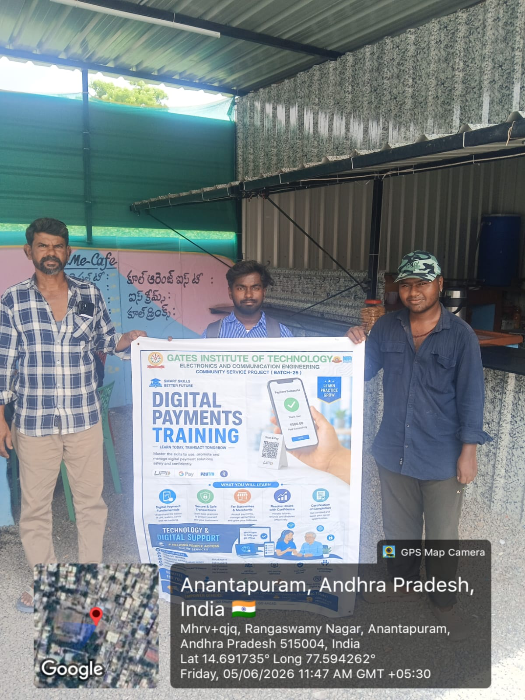
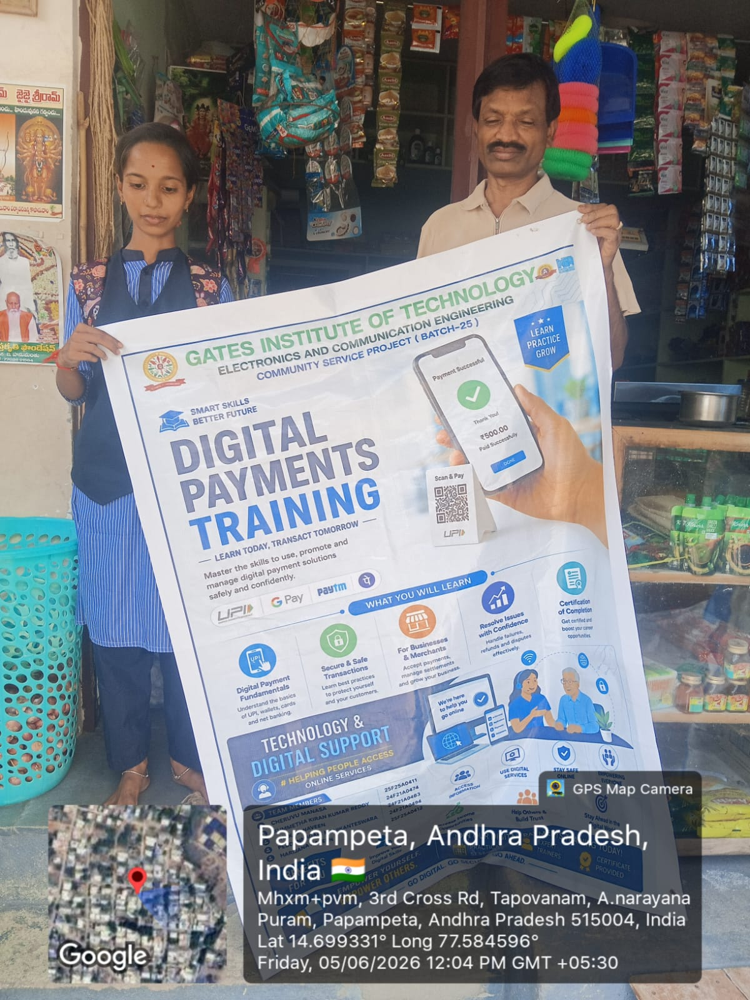
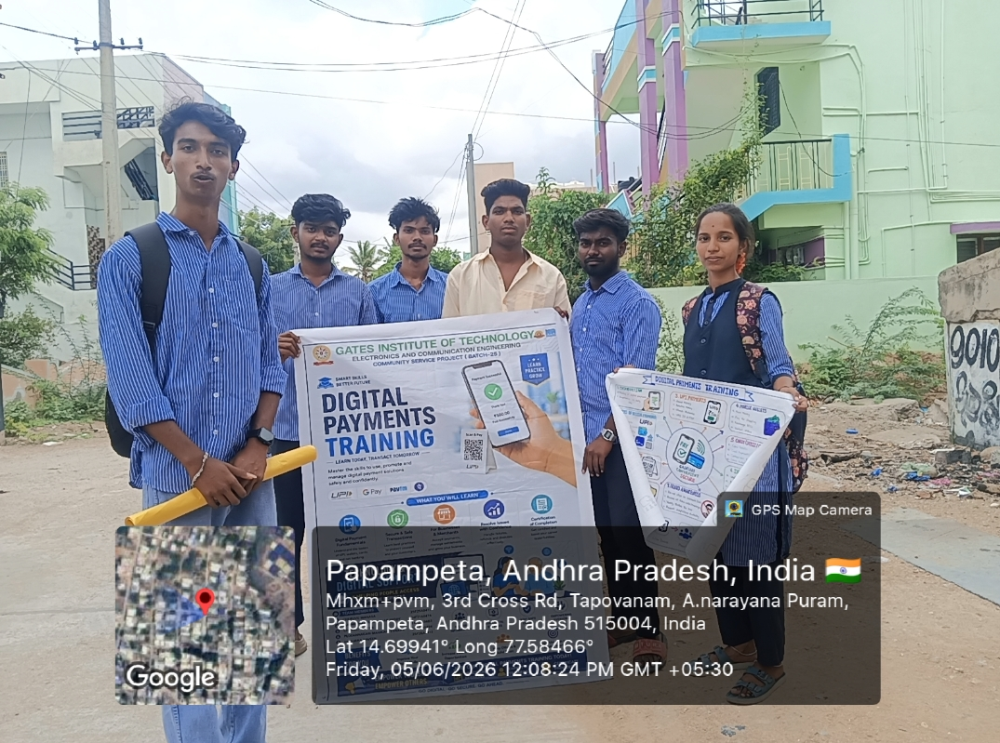
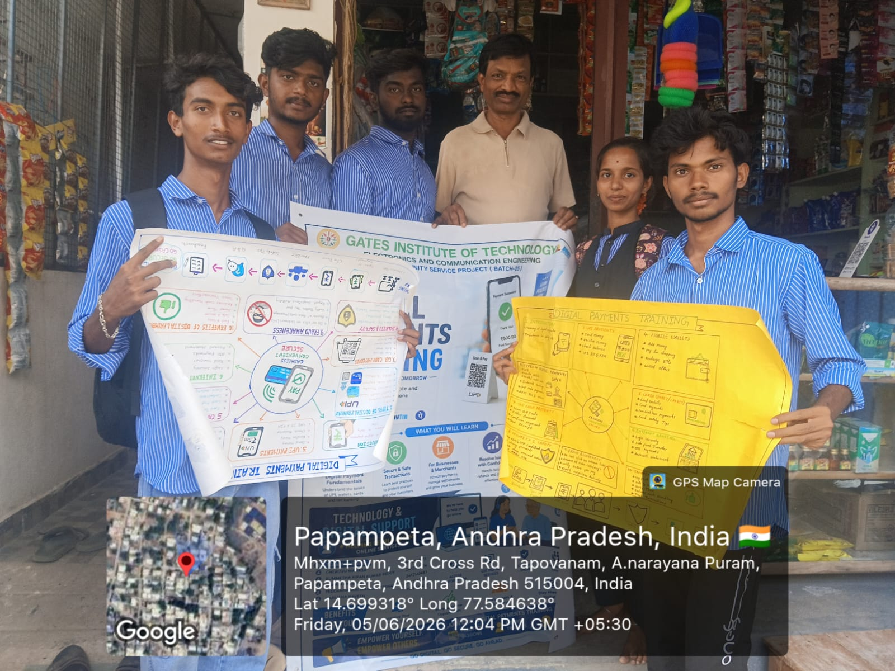
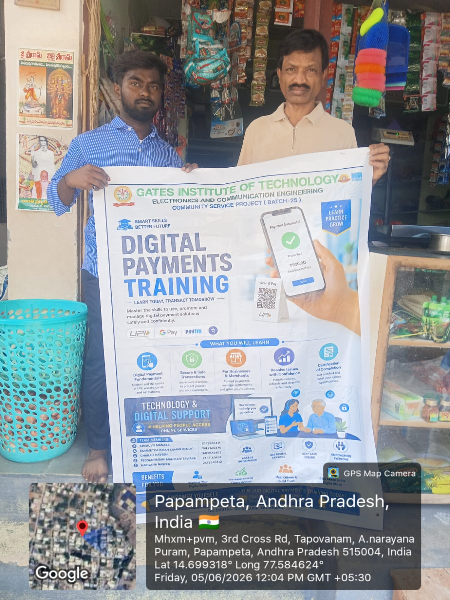
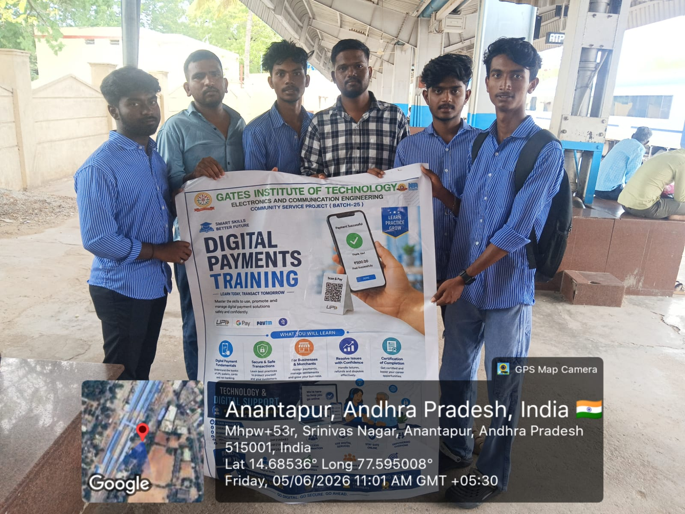
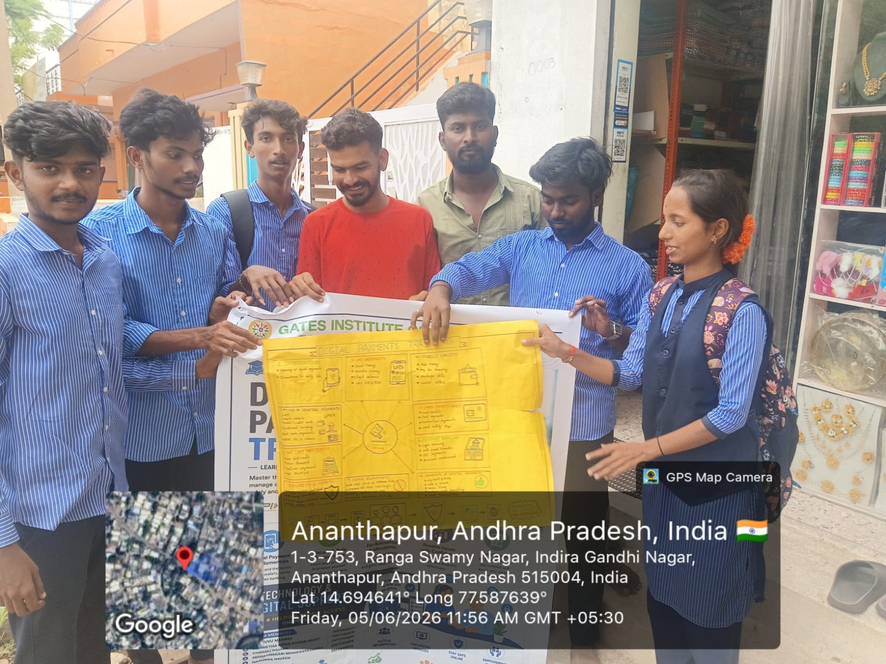
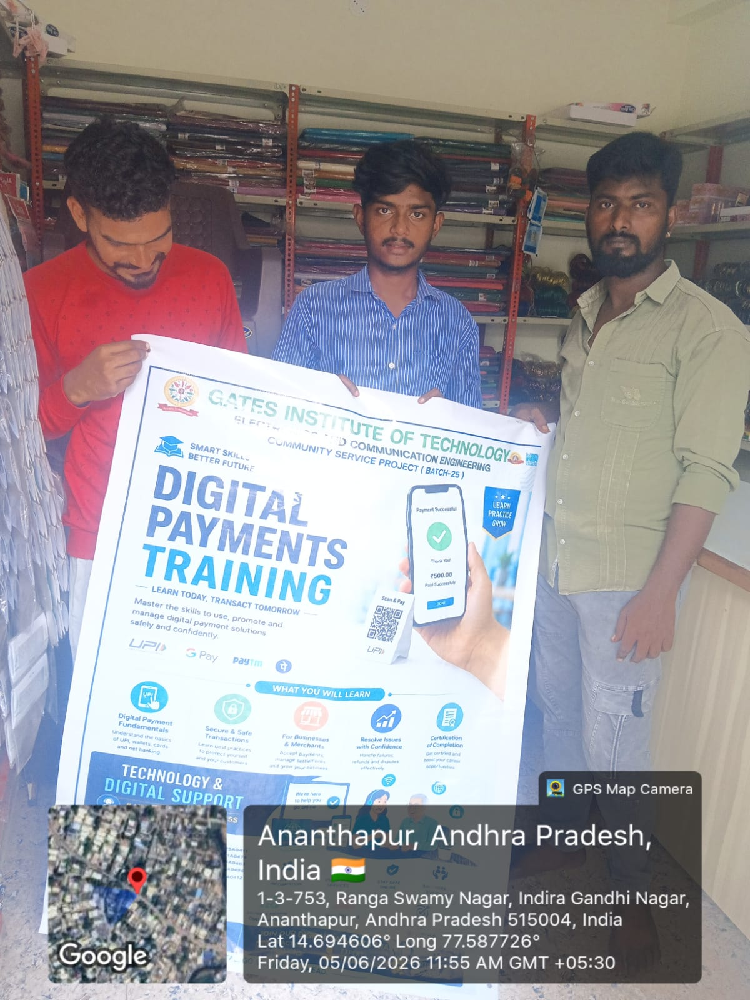

Why It Matters
Many citizens still face challenges in online services, digital payments, government schemes, and cyber safety. Lack of awareness creates dependency and limits opportunity.
Preparing Digital Support CSP
Helping citizens access online services, digital payments, cyber safety resources, and government schemes through awareness, education, and practical training.
This Community Service Project bridges the digital divide through hands-on training, awareness programs, demonstrations, and community engagement so residents can use online services safely and efficiently.
The team conducted direct community interaction in Anantapur to understand digital awareness, online service usage, payment confidence, and cyber safety needs.
Digital literacy is the ability to use smartphones, computers, internet services, online platforms, and digital tools safely and effectively.
Many citizens still face challenges in online services, digital payments, government schemes, and cyber safety. Lack of awareness creates dependency and limits opportunity.
To empower citizens through digital education, improve access to online services, promote safe digital practices, and encourage digital inclusion.
To create digitally aware and confident communities capable of utilizing technology independently and responsibly.

Digital Payments Training AwarenessTeam members introduced the CSP poster and explained UPI, QR payments, and safe transaction habits during field outreach.
Shopkeeper Awareness SessionLocal shopkeepers were guided on accepting digital payments, checking transaction status, and avoiding common payment mistakes.
Team Field Survey VisitThe student team documented digital awareness needs and interacted with residents as part of the survey activity.
Poster Presentation and DiscussionStudents used handmade and printed charts to explain digital payment benefits, safety rules, and merchant use cases.
Merchant Digital Payment GuidanceA local business owner was briefed on QR code payments, payment confirmation, and customer transaction verification.
Awareness at Public PlaceThe team shared digital payment training material with community members in a public area to reach more citizens.
Community Interaction and ExplanationStudents explained poster points directly to participants and answered questions about mobile payments and cyber safety.
Indoor Training DiscussionThe training continued indoors with practical discussion on digital payment fundamentals and safe usage practices.Community Service Project In-Charge
Guided planning, community alignment, review, and academic coordination.Project Guide
Supported activity design, documentation, presentation quality, and weekly progress.GATES Institute of Technology
Engineering College Community Service Project
Department: Engineering Outreach and Community Support
CSP In-Charge: J. Shiva Prasad Sir
Project Guide: Aruna Madam
Project Location: Anantapur, Andhra Pradesh, India
{kind=link}
{kind=link}
{kind=link}
{kind=link}
{kind=link}
{kind=link}
{kind=link}
{kind=link}